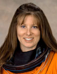

Lyndon B. Johnson Space Center
Houston, Texas 77058
|
National Aeronautics and Space Administration Lyndon B. Johnson Space Center Houston, Texas 77058 |
 |
Biographical Data |
||
Tracy Caldwell Dyson (Ph.D.)
NASA Astronaut
PERSONAL DATA: Born in Arcadia, California. Married to George Dyson IV. Caldwell Dyson enjoys sports, hiking, and auto repair/maintenance. She competed in intercollegiate track and field at California State University, Fullerton (CSU Fullerton), as both a sprinter and long jumper.
EDUCATION: Received a Bachelor of Science degree in Chemistry from CSU Fullerton, 1993 and a Ph.D. in Chemistry from the University of California at Davis, (UC Davis) 1997.
SPECIAL HONORS: NASA Space Flight Medal, 2007, 2010; NASA Distinguished Service Medal, 2010; NASA Go the Extra Mile (GEM) Award, 2001; NASA Superior Accomplishment Award, 2000; Outstanding Doctoral Student Award in Chemistry from UC Davis, 1997; Patricia Roberts Harris Graduate Fellowship in Chemistry, 1993-1997; Lyle Wallace Award for Service to the Department of Chemistry, CSU Fullerton, 1993; National Science Foundation Research Experience for Undergraduates Award, 1992. Council of Building & Construction Trades Scholarship, 1991-1992; Big West Scholar Athlete, 1989-1991.
EXPERIENCE: As an undergraduate researcher at CSU Fullerton, Caldwell Dyson designed, constructed and implemented electronics and hardware associated with a laser-ionization, time-of-flight mass spectrometer for studying atmospherically relevant gas phase chemistry. During that time she also worked as an electrician/inside wireman for her father’s electrical contracting company doing commercial and light industrial construction. At UC Davis, Caldwell Dyson taught general chemistry laboratory and began her graduate research. Her dissertation work focused on investigating molecular level surface reactivity and kinetics of metal surfaces using electron spectroscopy, laser desorption, and Fourier transform mass spectrometry techniques. She also designed and built peripheral components for a variable temperature, ultra-high vacuum scanning tunneling microscopy system. In 1997, she received the Camille and Henry Drefus Postdoctoral Fellowship in environmental science to study atmospheric chemistry at the University of California, Irvine (UC Irvine). There, she investigated reactivity and kinetics of atmospherically relevant systems using atmospheric pressure ionization mass spectrometry, Fourier transform infrared and ultraviolet absorption spectroscopies. In addition, she developed methods of chemical ionization for spectral interpretation of trace compounds. Caldwell Dyson has published and presented her work in numerous papers at technical conferences and in scientific journals. She is a private pilot and conversational in American Sign Language (ASL) and Russian.
NASA EXPERIENCE: Selected as an astronaut by NASA in June 1998, Caldwell Dyson reported for training in August. In 1999, she was first assigned to the Astronaut Office International Space Station Operations branch as a Russian crusader, participating in the testing and integration of Russian hardware and software products developed for the International Space Station (ISS). In 2000, she was assigned prime crew support astronaut for Expedition 5 to the ISS, serving as their representative on technical and operational issues throughout the training and in-orbit phase of their mission. Caldwell Dyson has worked inside the Mission Control Center as spacecraft communicator (CAPCOM) for both space shuttle and space station operations, serving also as the lead CAPCOM for ISS Increment 11. Other technical assignments included flight software verification in the Shuttle Avionics Integration Laboratory (SAIL) and supporting shuttle launch and landing operations at NASA’s Kennedy Space Center, Florida. Upon returning from her station mission, Caldwell Dyson established and led a large, multidisciplinary troubleshooting team focused on improving stowage and cargo transfer processes aboard the ISS. During her two flights, Caldwell Dyson logged over 188 days in space, including more than 22 hours in three spacewalks.
SPACE FLIGHT EXPERIENCE: STS-118 (August 8, 2007 through 21, 2007) was the 119th space shuttle flight, the 22nd flight to the space station, and the 20th flight for Endeavour. During the mission, the crew successfully added truss segment S5 and a new gyroscope. As a mission specialist, Caldwell Dyson assisted in flight deck operations on ascent and also aided in rendezvous/docking operations with the ISS. Caldwell Dyson operated Endeavour’s robotic arm to maneuver the Orbiter Boom Sensor System (OBSS) and handover the S5 truss segment to the space station, and served as the intravehicular (IV) crew member, directing the four spacewalks. Traveling 5.3 million miles in space, the STS-118 mission was completed in 12 days, 17 hours, 55 minutes and 34 seconds.
Caldwell Dyson launched aboard a Soyuz TMA 18 crew capsule on April 2, 2010, from the Baikonur Cosmodrome in Kazakhstan, docking with the space station two days later to join the Expedition 23 crew. For the next 174 days, Caldwell Dyson lived and worked aboard the ISS as a flight engineer on Expeditions 23/24. Caldwell Dyson performed three successful contingency spacewalks to remove and replace the failed pump module on the station, logging 22 hours and 49 minutes of spacewalk time. The Expedition 24 crew returned to a safe landing in central Kazakhstan on September 25, 2010. In completing this long duration mission, Caldwell Dyson logged a total of 176 days in space.
JULY 2014